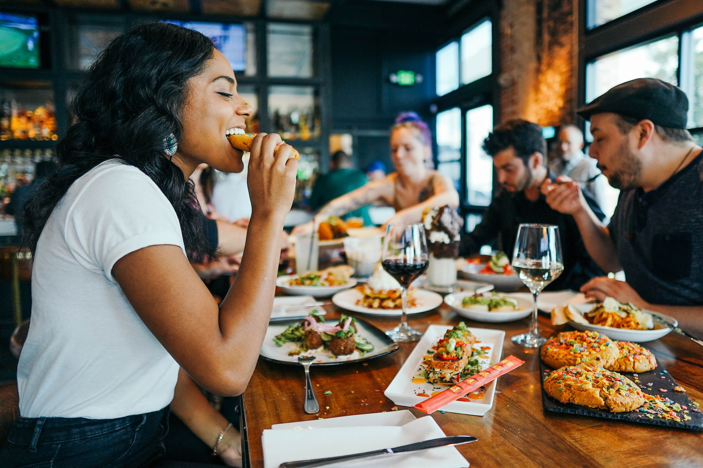
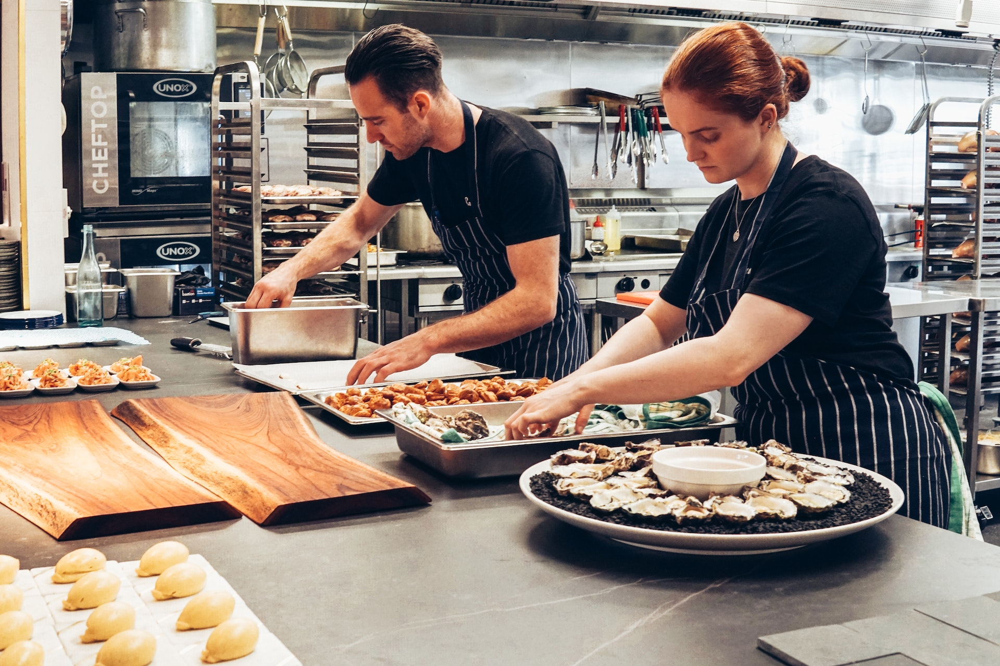

레스토랑 이미지

- 
- 
1. 고객님의 행복과 맛을 찾는 레스토랑
푸드런은 맛과 행복을 찾는 레스토랑으로 고객님들의 입맛을 지키기 위해 모든 방면에서 노력하고 있습니다. 만족스러운 식사를 위해서 청결, 재료의 질, 정성을 다해 고객님들의 식사시간을 존중하겠습니다.
2. 푸드런의 가능성
무한한 상상력을 가지고 있는 사람들 무엇을 판매할까가 아니라 무엇을 주고 싶은지 고민하는 사람들 남들과 다르더라도 옳다고 생각하는 길을 걷는 사람들 음식만이 아니라 음식과 결합된 문화를 파는 엔터테인먼 기업을 꿈꾸는 사람들 그런 사람들이 만드는 푸드런의 가능성은 무한대입니다.